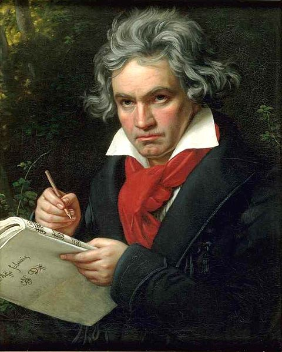

Beethoven’s last symphony includes part of the Ode to Joy poem’s written by Friedrich Schiller.
Freude, schöner Götterfunken
Tochter aus Elysium,
Wir betreten feuertrunken,
Himmlische, dein Heiligtum!
Deine Zauber binden wieder
Was die Mode streng geteilt;
Alle Menschen werden Brüder,
Wo dein sanfter Flügel weilt.Wem der große Wurf gelungen,
Eines Freundes Freund zu sein;
Wer ein holdes Weib errungen,
Mische seinen Jubel ein!
Ja, wer auch nur eine Seele
Sein nennt auf dem Erdenrund!
Und wer's nie gekonnt, der stehle
Weinend sich aus diesem Bund!Freude trinken alle Wesen
An den Brüsten der Natur;
Alle Guten, alle Bösen
Folgen ihrer Rosenspur.
Küsse gab sie uns und Reben,
Einen Freund, geprüft im Tod;
Wollust ward dem Wurm gegeben,
und der Cherub steht vor Gott.Froh,
wie seine Sonnen fliegen
Durch des Himmels prächt'gen Plan,
Laufet, Brüder, eure Bahn,
Freudig, wie ein Held zum Siegen.Seid umschlungen, Millionen!
Diesen Kuß der ganzen Welt!
Brüder, über'm Sternenzelt
Muß ein lieber Vater wohnen.
Ihr stürzt nieder, Millionen?
Ahnest du den Schöpfer, Welt?
Such' ihn über'm Sternenzelt!
Über Sternen muß er wohnen.
Beethoven’ symphonies
- Symphony
- Op.
- Tone
- Year
- Symphony 1
- Op. 21
- C Major
- 1800
- Symphony 2
- Op. 36
- D Major
- 1802
- Symphony 3, “Eroica”
- Op. 55
- E flat Major
- 1804
- Symphony 4
- Op. 60
- B flat Major
- 1806
- Symphony 5
- Op. 67
- C Minor
- 1808
- Symphony 6, “Pastorale”
- Op. 68
- F Major
- 1808
- Symphony 7
- Op. 92
- A Major
- 1812
- Symphony 8
- Op. 93
- F Major
- 1813
- Symphony 9
- Op. 125
- D Minor
- 1824